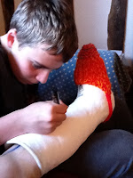

{kind=link}

I could begin with an apology – almost as soon as I posted my blog last month I was swept into a family crisis which plot-twisted into a broken leg and a week in hospital, a poorly-thought-out chapter which finished only the night before my partner was due to be admitted (to the same ward) for spinal surgery. Since then there has been no need to watch any episodes of Holtby City, Casualty or even re-runs of Emergency Ward 10. Instead we sit around in our double bed trying to keep warm - rather like the elderly grandparents in Charlie and the Chocolate Factory. (I really ought to be knitting nightcaps now I've completed my essential toe-cosy.) So I didn’t manage the follow-up correspondence that is one of the pleasures of blog-writing. Apologies especially to Enid Richemont who asked a question and never got an answer.Or I could begin with congratulations – to former Authors Electric blogger Nicola Morgan who has re-published her first novel Mondays are Red to widespread attention and acclaim. I’m now counting the days until Jan Needle bursts upon the world with his own early work re-published in ebook format. This re-vivifying of personal backlists is, in my opinion, the greatest boon in electric publishing. If the GoogleBooks project takes off, readers with any downloaded e-reading app should be able to access anything they like from their favourite authors without even having to truffle through the local Oxfam box.
But, as it’s December, I’m going to begin with a little story, a heart-warmer. It’s called ‘Mothers Lost and Found’ and it was first published in the New York Times May 8th 2005.
A young writer, Ellen Pall, is moving to live in New York for the first time. She follows the estate agent's advice and goes to look at an apartment for rent in Greenwich Village. “As soon as I went inside, I felt that this was a place where I could live. Even the tiny ground floor vestibule was quiet and snug, comfortable and somehow familiar …” Ellen (this is a true story) had lost her mother at the age of 7. Her father had re-married and Ellen had grown up questing unsuccessfully for this mother she had never properly known. “My mother remained a ghostly figure lost in a vanished time, vivid only for her sad and early death from a rare form of anaemia.”
You’ve guessed what happens next, of course – the strangely welcoming apartment turns out to be the precise place where Ellen’s mother, Jo, had lived in the late 1930s when she too was a young artist in New York. But the story goes one better. The discovery of the apartment leads Ellen to reconnect with the woman who had shared it with her mother so long ago. “From Debbie, over the next twenty years I learned to know Jo as I never could have done if the shared address had not drawn us together.” Not just nostalgia but a solid enduring friendship between two women of different generations. When Debbie died, in 2004, Ellen set up a website in her memory http://www.debbiesidea.com/
{kind=link}
Debbie’s Idea – which Ellen has put into practice – centred on the delight of discovering a new author and the difficulty of knowing Where to Begin? “Start reading an author with a poor or atypical example of his work, she observed, and you would likely never read that writer again--perhaps losing in the process a world of pleasure and knowledge.” Friends give this advice to each other, so do booksellers and librarians. (I do hope other people caught the valiant defence of professional bookselling by Vivian Archer of the Newham Bookshop on Monday’s PM programme on BBC Radio 4.)
Perhaps, as authors, we might all like to pick just one book – it might be our first or it might be our latest – which we would like to stand as our introduction to a new, inquisitive reader? My introduction to Ellen Pall, the book which sparked an electronic, transatlantic friendship, was my first book, a biography, The Adventures of Margery Allingham, which had been newly re-published in memory of my own dear friend of a different generation …
But that’s a different story.